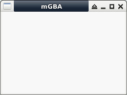

參考資訊：
https://devkitpro.org/index.php
https://wii.leseratte10.de/devkitPro/
https://patater.com/gbaguy/gbaasm.htm
http://www.coranac.com/tonc/text/toc.htm
https://github.com/devkitPro/devkitarm-crtls
https://gist.github.com/JShorthouse/bfe49cdfad126e9163d9cb30fd3bf3c2
main.s
.global main
.arm
.text
main:
b main
Makefile
include $(DEVKITARM)/gba_rules all: arm-none-eabi-gcc -mcpu=arm7tdmi -mtune=arm7tdmi -fomit-frame-pointer -ffast-math -mthumb -mthumb-interwork -I/opt/devkitpro/libgba/include -c main.s -o main.o arm-none-eabi-gcc -mthumb -mthumb-interwork -specs=gba.specs main.o -L/opt/devkitpro/libgba/lib -lgba -o main.elf arm-none-eabi-objcopy -O binary main.elf main.gba clean: rm -rf main.o main.elf main.gba main.sav
編譯、執行
$ sudo docker run --rm -it -v $(pwd):/source nds-env /bin/bash root@3d7d8cbf3564:/source# make && exit $ mgba main.gba
